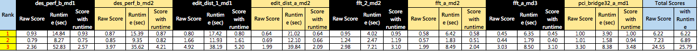
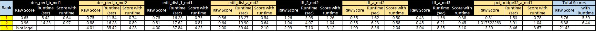
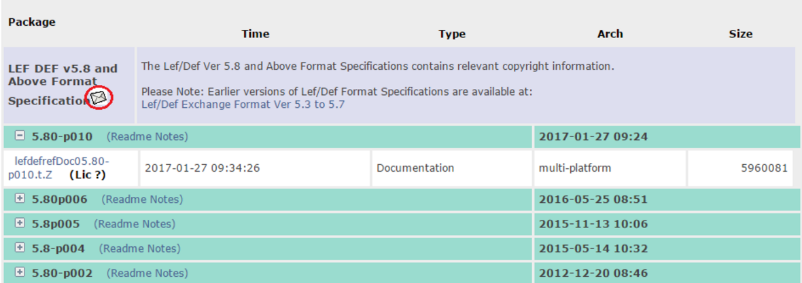
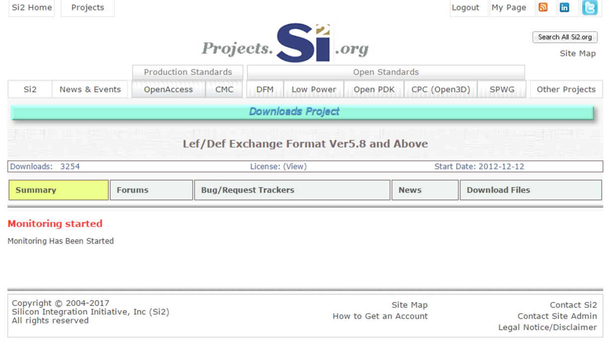
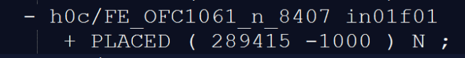
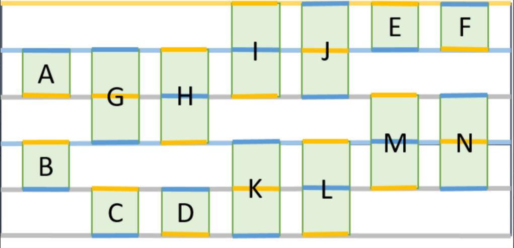

I. INTRODUCTION
The multi-deck standard cell placement legalization problem has become more challenging because of complicated design rules and design utilization at 14nm and lower technology nodes. An ideal legalization method should remove all overlaps while satisfying delicate and complicated design rules with preserving the quality of the given placement provided by global placement or timing optimization steps. In other words, during the legalization step, not only the average cell movement but also maximum cell movement should be minimized. In addition, the process must be fast and robust to handle the sheer number of cells in the state-of-the-art designs. Some of the challenges in legalization of designs with advanced nodes are as the following:
- Routability gap before and after legalization: In addition to wirelength, the quality of routability is optimized during the global placement. However, in legalization the routability is degraded as the initial solution provided by global placement is perturbed. This issue has become more critical in advanced node technologies because of a high average number of pins per net (usually 4 or more), data-path modules in the netlist, accounting for special requirements associated with clock networks, accounting for timing objectives, etc.s
- Physical floorplan complexity: These challenges stem from overall placement utilization, fence regions, irregular shape of the placeable area (e.g., disproportionate floorplan aspect ratios, rectilinear macro shapes, and narrow channels between large macros), boundary-pin-placement restrictions, power/ground routing resource estimation, etc.
- Complicated design rules: In addition to the constraints and rules defined to address the complexity of physical floorplan, there are other complicated design rules to address detailed routability. Some of these rules are: EDGETYPE spacing constraints among cells, and pin access and pin shorts issues [1,2].
- Target utilization: Most legalizers do not consider target utilization effectively. This can exacerbate situations where an input placement has local regions with high cell area utilizations. In such a scenario, it is not easy to achieve the desired timing characteristics since there may not be enough whitespace in those areas to effectively apply buffer insertion or gate sizing techniques to meet timing requirements.
- Multi-deck cells: With shrinking transistors, an increasing number of multi-deck cells occupying multiple rows(e.g. multi-bit registers) are used in advanced node technologies to achieve low power and high performance. However, it is hard to handle multi-deck cells during legalization. Legalizers should not only satisfy all the traditional constraints defined, but also the P/G alignment when placing multi-deck cells. There are some recent works trying to address Multi-deck cell legalization [3, 4].
Traditional academic legalizers have mainly addressed removing overlaps among cells on each standard row defined in the design. However, in practice there are growing challenges (including those mentioned above). Hence, new approaches are needed to overcome these challenges.
II. Benchmark Suite
We will provide a benchmark suite using the Library Exchange Format (LEF) and Design Exchange format (DEF) 5.8 exchange format for this contest. You can find complete descriptions of these standard ASCII formats at http://www.si2.org/openeda.si2.org/projects/lefdef. For each design, we will provide four files:
- Cells.lef - Physical characteristics of the technology library for the standard cell library, macros, and IO cells, etc.
- Tech.lef - Physical characteristics of the routing layers, vias, placement site types, etc.
- Design.def - Design-specific logical and physical information that represent of the design during any stage of the physical design process. This includes net-list connectivity, grouping information, physical constraints, cell locations and orientations, routing geometry data, etc.
- Design.constraints - A text file that includes some others constraints such as maximum target utilization or maximum displacement. Any constraint defined in this file is considered as a soft constraint. If each of the constraints defined in this file is not satisfied, a penalty will be enforced for the evaluation.
We will provide a sample benchmark suite by February 30, 2017, to help you iron out parsing the data and initially test your infrastructure. We will provide one benchmark suite with 8 designs driven from the ISPD 2015 benchmarks by March 30, 2017. Both will be downloadable from the ICCAD 2017 contest website. The global placements of all designed are generated by Eh?Placer [5]. The released benchmarks and some hidden benchmarks will be used to evaluate the final binaries submitted by team participants.
LEF/DEF parsers:
We strongly encourage downloading the LEF/DEF parsers already available from http://www.si2.org/openeda.si2.org/projects/lefdef. If you do not have an SI2 license, please contact your university staff to obtain a free license for academic use. You may also write your own LEF/DEF parsers if you wish. However, using the already available parsers will save you a considerable amount of effort and time. Since the recommended parsers are not provided by the contest organizers, the contest organizers are not responsible for any issue with the referred link or the source codes.
III. Evaluation Metrics
The following is the list of evaluation metrics:
- Maximum Cell Movement is computed based on maximum Manhattan distance of cells from their original positions divided by the height of a placement row..
- Average Cell Movement is the total Manhattan distance of movable cells divided by the number of movable cells and the height of a placement row.
- HPWL is computed for each solution.
- Target Utilization: standard deviation from average placement utilization provided for each design.
- Runtime directly affects the evaluation of each team. However, there is a specified maximum runtime target. Multi-thread implementations are strongly encouraged. The maximum number of threads allowed to run in parallel is 8.
The exact evaluation metric will be published on the website with the release of the final benchmark suite. Redhat-6.0 executables will need to be provided for this evaluation. In addition, there will be additional “blind” testing of the final executables for each team on a similar set of unseen benchmark designs. The solutions generated by each team will be evaluated by Mentor Graphics’ Olympus-SoC P&R tool [6].
IV. Constraints
The following are the constraints considered for the contest:
- Soft Constraints: Target utilization, maximum cell movement cell edge spacing, pin access and pin shorts are considered as soft constraints. If each of these constraints is not satisfied, a penalty will be enforced for the evaluation. The definitions of penalties are presented later.
- Hard Constraints: P/G alignment of multi-deck cells, row and site alignments, and fence regions are defined as hard constraints. Each solution must satisfy these constraints; otherwise, the submission receives the maximum score.
- Netlist Constraints: The cells in the netlist must remain the same. That is, no cell resizing, no addition/deletion of buffers, tech remapping, etc. are allowed; however, cell flipping is allowed as long as no hard constraint is violated.
- Each submitted binary is allowed to use up to 8 parallel threads per run. Any thread in addition to 8 parallel threads is terminated, which may lead to unexpected results.
V. Contest Procedure
Each team must follow the below steps:
- Create a contest web account.
- Write a legalization tool that interfaces with a LEF/DEF parser.
- For each design, do the following:
- Read the LEF/DEF/Verilog input files.
- Generate a DEF file with all cell instances legalized. The generated DEF file must include all the statements defined in the original DEF file except for the locations and orientations of cells.
- Upload the DEF file to the contest website.
The details of the procedure will be declared later.
VI. Binary Submission
The executable should have the following required arguments:
- tech_lef : specifies the tech.lef input file
- cell_lef : specifies the cell.lef input file
- input_def: specifies the input DEF file (that is a global placement solution)
- output_def: specifies the output DEF file (that is a legal solution)
- placement_constraints : specifies the placement.constraints file
It may also have the following optional argument:
- cpu : specifies the number of parallel threads to use
An example for running your binary:
cada001 -tech_lef tech.lef -cell_lef cell.lef -input_def placed.def -cpu 4 -placement_constraints placement.constraints -output_def lg.def
VII. Evaluation Score
For a given solution, Mentor Graphics Olympus-SoC is used to resolve detailed routing issues including cell edge spacing, pin access, or pin shorts problems. If the solutions provided by participants correctly satisfy detailed routing constraints, no perturbation will be applied by Olympus-SoC.
For the given solution, after resolving detailed routing issues by Olympus-SoC, an evaluation score is computed as follows:
$S_{total}=S_{am} \times S_{mm} \times (1+S_{hpwl}+S_v) \times (1+S_t)$
$S_{mm}=maximum \ movement \ score$
$S_{am}=average \ movement \ score$
$S_{total}=total \ score$
$S_{hpwl}=HPWL \ score$
$S_{t}=runtime \ score$
$S_{v}=soft \ constraint \ score$
$S_v=min(0.2,\frac{N_v}{N_{cells}})$
$S_t=max(-0.2,min(0.2,0.05 \times \log_2 (\frac{t_{tool}}{t_{median}})))$
$S_{am}=\frac{\sum_{k=1}^{4}M_{avg,k}}{4}$
$S_{mm}=1+(\frac{M_{max}}{100}) \times f_{mm}$
$f_{mm}=max(\frac{\sum_{c_i \in C_v}{M_i}} {M_x},1) \ if\ M_x\ is\ not\ defined\ in\ the\ design,M_x\ will\ be\ set\ to\ N_rows$
$S_{hpwl}=max(\frac{hpwl_{lg}-hpwl_{gp}}{hpwl_{gp}},0) \times (1+max(\beta \times f_{of},0.2))$
$f_{of}\ is\ a\ factor\ that\ is\ determined\ by\ the\ same\ metod\ used\ in\ the\ ISPD\ 2015\ contest$
$N_{cells}=number\ of\ cells\ in\ the\ design$
$N_{v}=number\ of\ soft\ constraint\ violations\ in\ the\ solution$
$N_{rows}=number\ of\ rows\ in\ the\ design$
$t_{tool}=the\ runtime\ on\ the\ design$
$t_{median}=the\ median\ runtime\ of\ all\ participants\ on\ the\ design$
$hpwl_{gp}=the\ global\ placement\ HPWL\ of\ the\ design$
$hpwl_{lg}=the\ HPWL\ of\ the\ legal\ design$
$M_{avg,k}=Average\ Cell\ Movement\ of\ all\ cells\ with\ a\ height\ equal\ to\ k\ rows$
$M_{max}=Maximum\ Cell\ Movement$
$M_x=the\ maximum\ cell\ movement\ constraint\ defined\ for\ the\ design$
$M_i=the\ displacement\ of\ cell\ c_i$
$C_v=a\ set\ of\ cells\ whose\ displacements\ are\ greater\ than\ M_x$
$\beta=a\ constant\ number\ (its\ value\ will\ be\ declared\ later)$
VIII. Bibliography
- Ismail S. Bustany, David Chinnery, Joseph R. Shinnerl, and Vladimir Yutsi. ISPD 2015 benchmarks with fence regions and routing blockages for detailed-routing-driven placement. In Proc. of ISPD, pages 157–164, 2015.
- Vladimir Yutsis, Ismail S. Bustany, David Chinnery, Joseph R. Shinnerl, and Wen-Hao Liu. ISPD 2014 benchmarks with sub-45nm technology rules for detailed-routing-driven placement. In Proc. ISPD, pages 161– 168, 2014.
- Yibo Lin, Bei Yu, Xiaoqing Xu, Jhih-Rong Gao, Natarajan Viswanathan, Wen-Hao Liu, Zhuo Li, Charles J Alpert and David Z. Pan, “MrDP: Multiple-row detailed placement of heterogeneous-sized cells for advanced nodes”, In Proc. of ICCAD, Austin, TX, Nov 7-10, 2016.
- Wing-Kai Chow, Chak-Wa Pui, and Evangeline F. Y. Young, “Legalization algorithm for multiple-row height standard cell design, ” In Proc. of DAC, pages 83:1–83:6, 2016.
- N. Karimpour Darav,A. Kennings, A. Fakheri Tabrizi, D. Westwick, and L.Behjat, “Eh?Placer: A high Performance Modern Technology-Driven Placer, ” in the ACM Transaction on Design Automation of Electronic Systems (TODAES), Vol. 21, No. 37, USA, 2016, pp. 37:1-37:27.
- Mentor Graphics Corp., a Siemens Business. Olympus-SoC place and route for advanced node designs. Technical report, www.mentor.com/products/ic\ nanometer\ design/place-route/olympus-soc, 2015.
IX. TestCase
-
Sample Benchmarks
-
Benchmarks1 - 2017/05/25
-
Hidden Testcases - 2017/10/30
X. Alpha Test

XI. Beta Test

XII. Final Test
Evaluation Scores
Top 3 Solutions
XIII. Citing This Work
For any content on this page, please cite the following paper:
Nima Karimpour Darav, Ismail S. Bustany,Andrew Kennings, and Ravi Mamidi, "ICCAD-2017 CAD Contest in Multi-Deck Standard
Cell Legalization and Benchmarks", Proc. IEEE/ACM ICCAD, 2017.
XIV. FAQ
- I would like to ask why "cell flipping is allowed only for cells with height equal to odd numbers of a row height."
When there are cells with height equal to odd numbers of a row height, they can be placed on any row by using cell flipping to align them with P/G. However, cell flipping does not help cells with height equal to even numbers of a row height to be aligned with P/G and they cannot be placed on any row.
There are two types of cells with height equal to even numbers of a row height. One type has only pins vss on the top and bottom of a cell while the other type has pins vdd on the top and bottom of a cell. The first type can be placed on only even rows while the second type can be placed on only odd rows. Since cells flipping doesn't help here, it is no allowed for cells with height equal to even numbers of a row height.
- According to the instruction in the website of the contest, we click the link:” https://projects.si2.org/openeda.si2.org/projects/lefdef/”. Then, we want to download LEF/DEF parsers file and use it. So, we register a Guest-Individual account because we are still students in the school and we don’t have company name. However, when we press the button (circle with the red line in the following picture1) in the website, it comes out the other website (picture2) and the file doesn’t show up.
Picrure1:

Picture2:
M
It should be mentioned that the referred linkhttps://projects.si2.org/openeda.si2.org/projects/lefdef/ is not managed or provided by the contest organizers. Therefore, the contest organizers are not responsible for any issue with the referred link or the source codes downloaded from https://projects.si2.org/openeda.si2.org/projects/lefdef.
-
In the description of Problem C, ‘Contest Procedure’3-a) Read the LEF/DEF/Verilog input files. However, uploaded sample benchmarks only contain LEF/DEF and constraint files. For my opinion, DEF file contain net information. So, even without verilog file, I can construct circuit. As a result, my question is, which one is right input file format? ( Uploaded sample or description - verilog included )
All required information including cell interconnections is provided in the DEF files. We might remove the statement regarding Verilog files from the description.
-
LEF and DEF file contain various metal and via information. Should we consider routability or Metal via location for contest result(result.def)?
Improving routability or timing is not the objective of this contest. However, the participants should consider power grid (P/G) mesh provided in the def files to align cells with rows. We encourage reading reference [3] for P/G alignment issues. In addition, there are some detailed routing rules such as edge spacing, pin access, and pin shorts constraints that should be satisfied in the solutions provided by the participants. In references [1] and [2], these issues are introduced. In reference [5], some methods are proposed to address the mentioned problems during the legalization.
-
Is there any starter_kit for using LEF/DEF parser? I download LEF/DEF parsers source code from si2.org. But It’s really complicate for using. If contest don’t care metal via or routability, I’d like to make own parser only for placement.
The participants can write their own parsers. However, the parsers should be compatible with LEF/DEf version 5.8 or above.
-
In pci_bridge32_a_md1 folder, we have a problem with the placed.def file. The placed cell like this below locates on (289415 -1000). Why some cells are out of the chip?

Are the cells out of chip supposed to be legalized?
All movable cells including those out of the chip area or fence regions are supposed to be legalized.
-
We are contestants of problem C and we found the in all of the released test cases, there is no POWER or GROUND rail for the bottom of first row and top of last row defined in SPECIALNETS of placed.def. I was wondering if these two rows are allowed to place cells?
Yes, cells are allowed to be placed on those rows as long as no P/G alignment is violated. For example, if a double row height cell is placed on the first row, its vdd/vss pins must be aligned with the power/ground rail on the top of the first row and the power/ground rails on the second row.
-
Can you explain what are pin access and pin shorts in more detail?
Pin shorts occur where fixed objects (including power/ground rails and primary inputs/outputs (PIOs)) overlap cell pins (not including vss/vdd pins) on the same metal layer. Pin access issues occur where cell pins (not including vss/vdd pins) overlap with fixed objects on a different metal layer. In addition to cells overlapping with fixed objects, highly congested areas have the potential of pin shorts and pin access problems during the detailed routing step (for more information please refer to reference [5]). Since the main objective of problem C does not include improving detailed-routability, contestants should consider only those pin access/shorts problems that may be caused by fixed objects.
-
I have a further question on the latest `def` toolkit def_5.8-p023 recommended by the contest. At line 374 of function
`defrInitSession`function in defrReader.cpp of def_5.8-p023, it should be
> if (defContext.session == NULL) {
instead of
> if (defContext.session = NULL) {
, which may keep `defContext.session` being null pointer. I reported this bug to SI2 as well.
Please refer to FAQ #3.
-
In test-cases edit_dist_1_md1 and fft_2_md2 provided in the benchmarks, the lef version of cell_modified.lef and tech.lef are inconsistent in each of the two cases (5.5 and 5.7, respectively) . Is it normal to have inconsistent version in the two lef files? (I got some parsing problems when they are inconsistent)
The provided benchmarks were generated from the original benchmarks used in the ISPD 2014 and 2015 contests where most teams could successfully parse the lef files.
-
Is maximum_movement a soft or hard constraint ?
Any constraint defined in the constraint file (placement.constraint) is considered a soft constraint for which there will be a penalty if it is violated.
-
We have a question regarding the EDGETYPE constraint:
If we have the following constellation:
____ ____
| | | |
| 2 1 |
|___| |___|
An EDGETYPE 2 on the right side of the first cell and an EDGETYPE 1 on the left side of the second cell. Does the rule "EDGETYPE 1 2 0.400" from the tech.file apply to this example, as well? We are asking this question because in our example we have the numbers "2 1" and the rules only specifies "1 2".
Yes, because for a pair of edge types, the edge spacing rules are symmetric.
-
Can you further explain the EDGETYPE spacing constraints? If EDGETYPEs are the property of the cells, in which cells are they defined?
The edge spacing table is defined in file "tech.lef". For example, the following statement is the table defined for design "fft_2_md2":
PROPERTYDEFINITIONS
LAYER LEF57_SPACING STRING ;
LAYER LEF57_MINSTEP STRING ;
MACRO LEF58_EDGETYPE STRING ;
LIBRARY LEF58_CELLEDGESPACINGTABLE STRING
"CELLEDGESPACINGTABLE
EDGETYPE 1 2 0.400
EDGETYPE 1 1 0.400
EDGETYPE 2 2 0.000
;" ;
END PROPERTYDEFINITIONS
For each cell, two properties are defined for the left and right edges in file "cells_modified.lef". For instance, the following statement is the properties defined for MACRO ms00f80 of design "fft_2_md2":
PROPERTY LEF58_EDGETYPE "
EDGETYPE LEFT 2 ;
EDGETYPE RIGHT 2 ;
" ;
For the above example, any cell c2 instantiated from MACRO ms00f80 has EDGETYPE 2 for the left and right edges. Therefore, if a cell c1 with EDGETYPE 1 for its left edge is place just on the right side of cell c2, there must be a gap equal to 0.400 between two cells c1 and c2.
-
I think the violation in FAQ #8 is not well-defined. I was wondering whether only aligning power (ground) pin on ground (power) rail produces violation or even aligning power/ground pin on no rail produces violation as well?
The P/G alignment constraint must be satisfied where there are power (ground) rails. Placing cells on rows with no power (ground) rail does not violate any P/G alignment constraint.
-
In the hard constraint, we have to make sure every macro which must be placed in the regions where belong to some groups. But, there are some macros do not define its fence region, so we want to know whether it can be placed in any region?
If a cell is not assigned to a fence region, it must not be placed within a region; otherwise, the solution will not be acceptable. We strongly encourage the participants to refer to references [1] and [5].
-
In the constraint file, there is a maximum_movement constraint define the vertical displacement ex. 20 rows, but we don't know the constraint of horizontal displacement ex. x site. Therefore, Could we ignore the horizontal displacement during the legalization?
The defined constraint is used for the maximum movement including both vertical and horizontal movements. The maximum and average cell movements are computed based on the L1 distances of cells from their original locations. For a given design, if maximum_movement=20rows, the L1 distance of any cell c1 from its original location divided by the height of a row should not be greater than 20.
-
I was wondering in case `des_perf_b_md1` why the total area of cells named `h6a/*` `h6b/*` `h6c/*` was larger than the total area of regions belong to er6?
Thank you for bringing up this issue to our attention. We have resolved the issue and updated the benchmarks. Please download the updated benchmarks from the following link: https://drive.google.com/open?id=0B8sY-XEqkT6BdlRhellIZTJ4bk0
-
In the updated benchmarks, there is no P/G rail on the bottom of first row and top of last row. Can it be guaranteed that there will and will only be lack of P/G rail on these two positions in the final as well as unseen benchmarks?
For rows defined in a design, two situations may happen:
1- If a row has a P/G rail, all cells located on that row must satisfy the P/G alignment constraint.
2- If a row does not have any P/G rail, there is no need for satisfying the P/G alignment constraint.
-
When will the evaluation metrics for problem C be published? Or are they published already?
The evaluation metrics have been presented in the problem description. However, we are working on the evaluation formula and process which will be declared by June 5th.
-
We can see from the `cells_modified.lef` file that all cells are allowed to flip by the x-axis as well as the y-axis. However, from FAQ #1, flipping even-row cells by the y-axis is not allowed because of no help on P/G constraints. Is it allowed to flip by the x-axis and/or the y-axis to help to minimise HPWL and to avoid pin access and pin shorts issues while not violating the P/G rules?
We are removing this restriction in the updated description which will be released by June 5th.
-
Looking in the DEF file for the fft_a_md3 circuit I noticed that some fixed blocks (for example, block h0) are not aligned to circuit rows and cells. Shouldn't they be aligned as well?
The rules defined in the description are defined for movable cells. The locations and statuses of fixed objects defined in the DEF file must be preserved in the solutions provided by the participants.
-
I’m a little confused on FAQ #18. Below is an example while light (dark) yellow lines are power rails (pins), light (dark) blue lines are ground rails (pins) and light grey lines are empty rails. I was wondering if cell E and I were legal while all others were illegal?

For the given example, multi-deck cells H, J, L, and N are violating P/G alignment rules. while other multi-deck cells are correctly placed on rows. For single row height cells, both row orientation rules and P/G alignment must be satisfied. If a row does not have any P/G rails, the orientations of the cells on that row must be the same as the orientation of the row. In other words, for standard cells with one row height, the orientations of cells on a row must be satisfied even though the row does not have any rails.
-
I was wondering what was the limitation of memory in evaluation?
Considering the complexity of the released and hidden benchmarks, a limit of 16 GB is considered for the evaluation.
-
For FAQ #8, I can understand that P/G rails on metal 2/3 may affect the pin accessibility. However, as far as I'm concerned, influence by metal 4/5 may not be that large. I was wondering why they may influence or if the penalty functions of pins on different layers with rails on different layers vary from each other?
All pin shorts and access issues are penalized by the same method.
-
I was wondering how placement utilization was calculated? What is the size and distribution of local regions?
It is computed over square bins with sizes of 8x8 row heights. For more details, please refer to [1].
-
I was wondering if we had access to Olympus, the evaluation software, for better understanding to the way it resolved cell edge spacing, pin access and pin shorts problems?
We are working on an open access platform for the participants to evaluate their solutions based on the defined metrics. We will let the participants know once the platform is ready to use.
-
There is a question which makes me frightening. Are there the chips which are not the rectangle?
All chip areas used in the evaluation process are rectangular.
-
If the cell's original placement orientation is "N" and the location given is the lower left corner. Then we flip it and the placement orientation becomes "FS". When we want to output DEF file, the location given should be the point A or the point B?
According to the DEF description, point B is considered in the output file to indicate the location of the given cell.
-
I just want to ask how can I know the P/G rails information of a row and the P/G rails information of a double-row-height movable cell (there are two types of double-row-height cell) from the .def and .lef files provided in the benchmarks
In the DEF file provided for each design, the information of P/G rails is presented by using statement SPECIALNETS. Movable cells including multi-deck cells have at least two pins named vss and vdd that must be aligned with the P/G rails defined in the DEF file. These pins are defined in LEF files. For more information about LEF/DEF statements, please refer to the following link: http://www.si2.org/openeda.si2.org/projects/lefdef
-
Some fence regions go outside the chip area. Is a cell allowed to go outside the chip area if it is inside its fence region?
No, cells are allowed to be placed only in the areas shared between the die area and fence regions.
-
Could you give us information that submitting a dynamically-linked binary is permitted? i.e., Is it allowed to submit both of binary and *.so files? We'd like to include some library, but it didn't provide static-linking.
The submitted binary must be a single executable file. Any other files including temporary files and *.so files are deleted for each run.
-
According to the Alpha test report, we found that the evaluation terms $S_{am}$ and $S_{mm}$ are calculated before resolving detailed routing issues by Olympus-SoC. I was wondering if the soft constraints (i.e., edge spacing, pin access and pin shorts) have any impact on score? If they do, which evaluation terms do they affect?
Thanks! You are right; we did not consider soft constraints for evaluating alpha submissions. But we will consider them for beta and final submissions. We have realized that applying the Mentor tool on the solutions may lead to some unexpected improvements in results; therefore we have decided to take into account violations for the soft constraints as a penalty function in the total score. The updated version of the evaluation scores will be announced by Aug. 10th.
-
I was wondering if it was possible to release the corresponding def file generated by Olympus-SoC? I looked into region er4 of case des_perf_b_md1 but it seemed impossible for signal pins to avoid overlapping with P/G rails including those in metal 4 & 5. The boundaries of er4 are:
( 272807 298000 ) ( 286607 372000 )
( 286607 298000 ) ( 321207 314000 )
In term of sites, the boundaries are:
(1365 149) (1433 186)
(1433 149) (1606 157)
The total area is:
68 * 37 + 173 * 8 = 2516 + 1384 = 3900
There are two P/G rails in metal 4 across this region:
( 282000 0 ) ( 286000 600000 )
( 301900 0 ) ( 305900 600000 )
In term of sites, the boundaries of rails overlapping with the region are:
(1410 149) (1430 186)
(1510 149) (1529 157)
Since the width of the widest cells of this case is 8 and each cell has at least 1 signal pin, we can block the following region:
(1417 149) (1423 186)
(1517 149) (1522 157)
The blocked area is:
6 * 37 + 5 * 8 = 222 + 40 = 262
The total free area in this region is:
3900 - 262 = 3638
However, the total cell area in this region is: 3752, which is larger than total free area.
Thank you for bringing up this issue to our attention. We will investigate the issue; however, this issue imposes only a penalty value on the results driven from legal solutions. In other words, as long as the submitted solutions are legal, this issue does not affect the results of the participants because all submissions are evaluated using the same criteria. The Mentor tool does not apply any perturbation on the provided solution (no DEF file is generated).
-
In some benchmarks we encountered cells which have a global placement position within blockage areas or in regions other than the region they are assigned to. Thus in order to legalize great movements are necessary to get the cells out of the "forbidden area". These movements dominate the maximum movement and we wonder if they are included in the score calculation as any other cell or neglected.
All cells are taken into account.